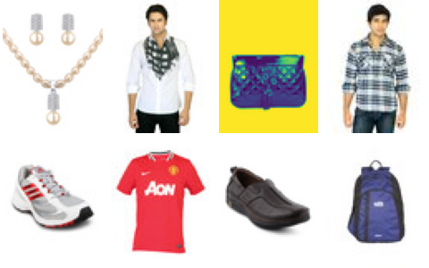

Kaggle 'Fashion Product Images' 의 축소판, Hugging Face ashraq/fashion-product-images-small (첫 묶음 22,036장)
| productDisplayName | gender | articleType | baseColour | season | year |
|---|---|---|---|---|---|
| Turtle Check Men Navy Blue Shirt | Men | Shirts | Navy Blue | Fall | 2.01e+03 |
| Peter England Men Party Blue Jeans | Men | Jeans | Blue | Summer | 2.01e+03 |
| Titan Women Silver Watch | Women | Watches | Silver | Winter | 2.02e+03 |
| Manchester United Men Solid Black Track Pants | Men | Track Pants | Black | Fall | 2.01e+03 |
| Puma Men Grey T-shirt | Men | Tshirts | Grey | Summer | 2.01e+03 |
22,036개 중. 종류가 143가지라 한쪽으로 몰려 있다
| ① 한 행 | 상품 하나 (사진 60×80 + 성별 · 종류 · 색 · 계절) |
| ② 입력 X | 상품 사진 |
| ③ 출력 y | 비슷한 상품 5개 (추천) |
| ④ 평가지표 | 추천 5개 중 같은 종류(articleType) 비율 |
| ⑤ 기준선 | 무작위로 5개 고르기 |
예시와 다르게 정해도 됩니다. 노트북 맨 끝의 '나의 다섯 칸' 을 채워 보세요.
random 5 : 15% same type nearest 5 by pixels: 63% same type
누가, 왜, 어떻게 만든 데이터인지 직접 확인해 보세요.
인턴 · 산학협력 · 프로젝트 주제를 고를 때 참고하세요 (일반적인 예시).